The photos below are of puppies from our dogs. We are proud to share some of our extended family and love to get updates and new photos.
Check back often!
Ziva at 15 weeks
Owned and loved by Dennis Nau.
Athena, owned and loved by Dr. and Mrs. David Cohen. She is doing very well with her training — she is attending puppy class and is very smart. Athena has a bigger bed, but she likes this one!
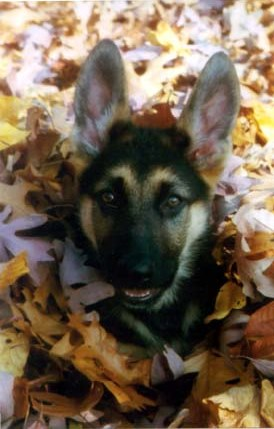Ketcha — owned and loved by Penny & Ken Gordon.
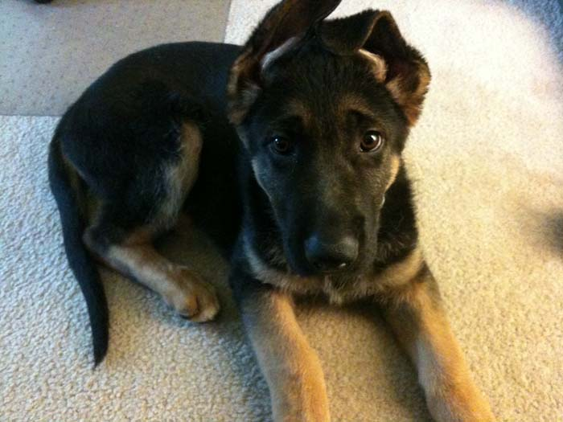This is Murphy at 8 weeks...
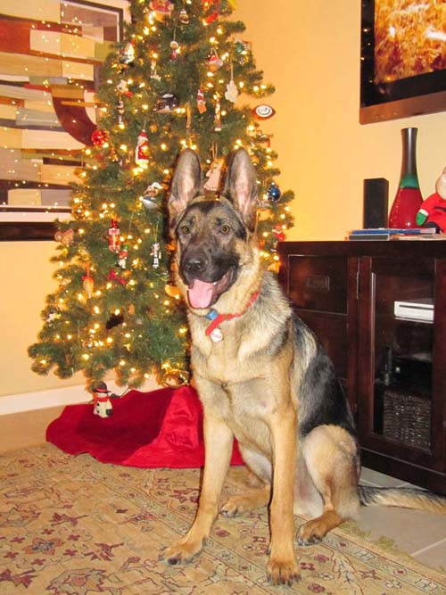...and at almost a year old. Murphy is owned and loved by Carrie Malles.
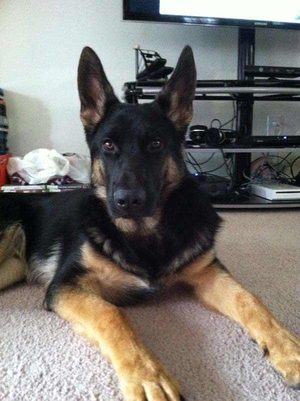This is Kaizer at 6 months old. He is a Juna and Axle puppy, owned and loved by Kimberly and Adam.
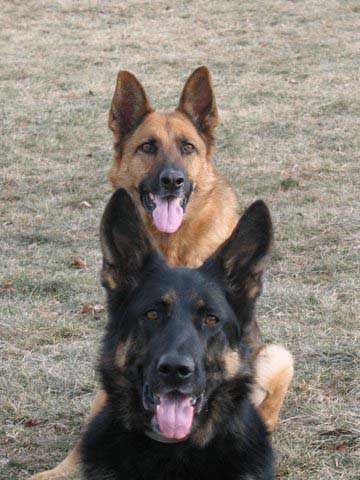Gus and Gert owned and loved by Jason and Miranda Dell.
(Can you see Nemo in Gus and Kaylee in Gert?)
Cooper — owned and loved by the Hummels.
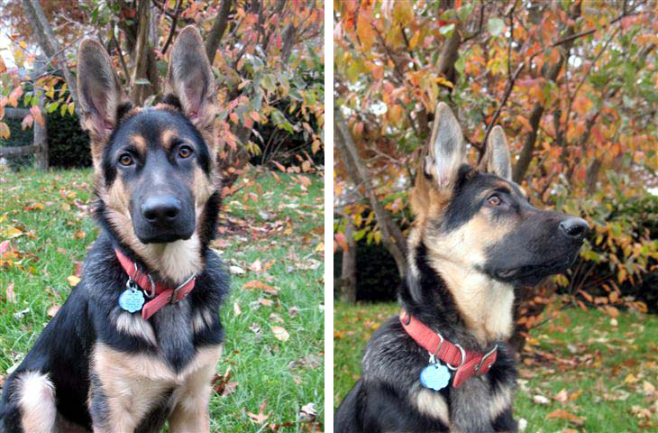Rugar — owned and loved by Jim and Lisa Taylor.
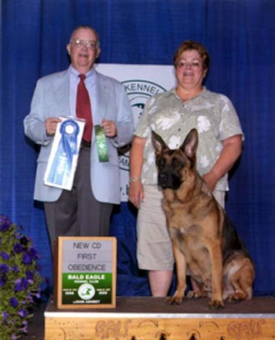Gus — a Sugar and Rio pup owned and loved by Bronwyn Alfano.
Shown here earning his Companion Dog title. Way to go Gus!
Gracie — owned and loved by Julie Alberts.
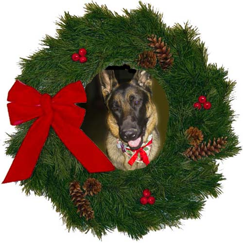Cisco at Christmas
Owned and loved by Phil Zangari.
Shadow — owned and loved by Kathy Kneiss.
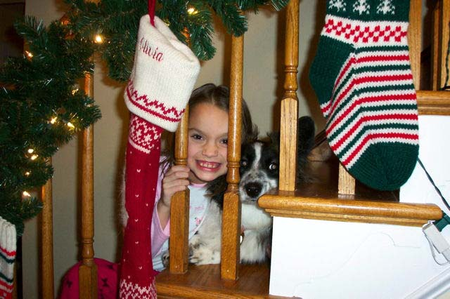Ozzie and our daughter Olivia are best friends. Ozzie follows Olivia everywhere and if either gets in trouble, the other one is right there defending them. Their favorite activities are running in circles around the house and teasing each other. Since Olivia is an only child, she calls Ozzie her little brother. Ozzie is a Cassie and "Ch. Rhydowen Jasper Again" puppy.
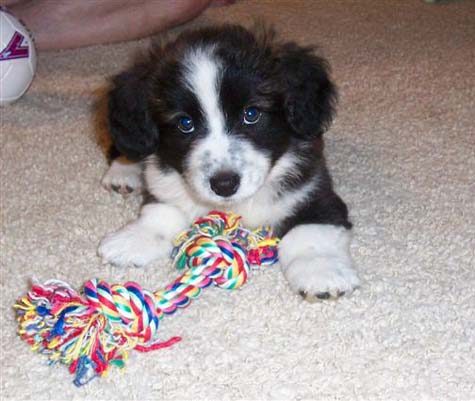Ozzie — owned and loved by Sharon, Skip, and Olivia Bozza.
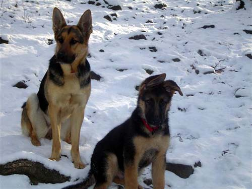Addy & Axel
Owned and loved by Ron and Penny Shank.
Lexi & Jesse
Owned and loved by Mr. and Mrs. Leo Ward.
Mitzee at 10 weeks...
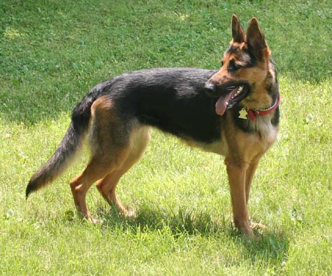...and Mitzee at 2 years old. Mitzee is owned and loved by the Gannons.
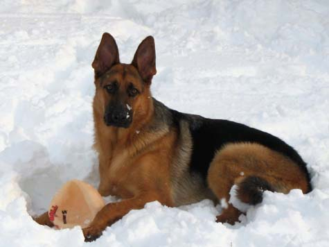Gus — owned and loved by Jason and Miranda Dell
(Gus is a brother to Mitzee above.)
Otis
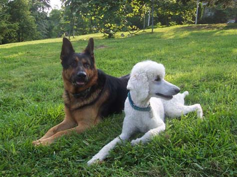Otis & friend
Otis is owned and loved by Jody Witek.
Tucker
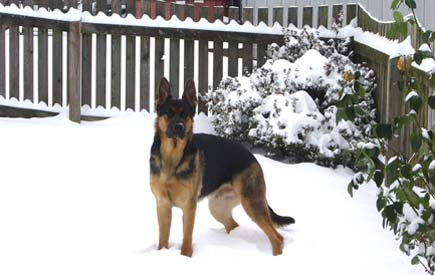Tucker is owned and loved by Robin & Joe Kelly.
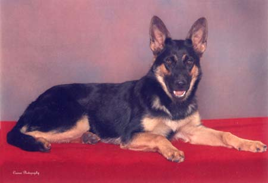Natasha — owned and loved by Debbie Boyer.
(Natasha is a sister of our Lida.)
Rainer — owned and loved by Bill & Cindy Welch.
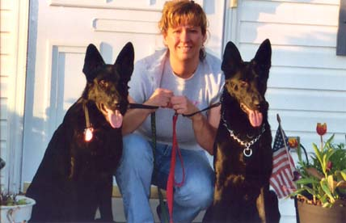Thunder & Grizzley
Owned and loved by Deb Zook.
Senica — Assistance Dog.
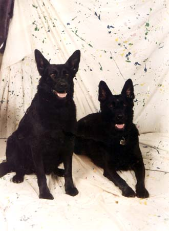Rommel & Tara
Owned and loved by the Sullivans.
Loki — owned and loved by the Aaron-Alfano family.
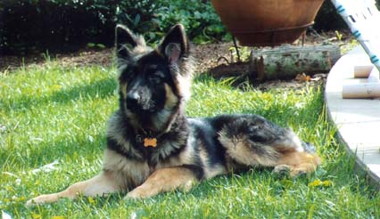Gunner (at 6 monhts)
Owned and loved by Gary Schaum.
Gabrielle Von Juno "Gabby"
Owned and loved by Robin Montgomery.
Tala (at 6 months)
Owned and loved by Cindy Bandy.
Zoe — owned and loved by Betty Jane Gochnauer.
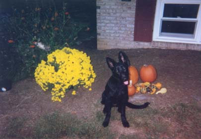Molly — owned and loved by Eva Santichen.
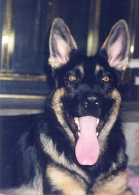Mason — owned and loved by the Brennans.
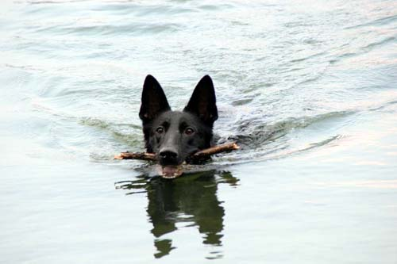Onyx — owned and loved by Nancy & Frank Fioretto.